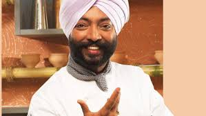

A renewed name as winning Michelin star culinary expert competition and second most popular one among top ten in India is Vikas Khanna. He is considered as the humble chef in the culinary field. He began his hourney in his grandma’s kitchen in Amritsar. Khanna has worked with lot of best food experts around the globe, including Gordon Ramsey, and Bobby Flay. Moreover, in New York he runs his own restaurant named “Junoon”. Khanna’s has additionally arranged a dinner for US President Barack Obama. In 2011, he was honored as ‘Sexiest Man Alive’ by People Magazine.
Click here
Sanjeev Kapoor
Sanjeev Kapoor is the most famous and commended face as the most favorite among top 10 chefs in India. He has great name in Indian food today. He is a professional Chef, works for an effective TV Channel ‘FoodFood‘. Sanjeev Kapoor is among most popular top ten chefs in India. He is the writer of top cookbooks, owner of famous restaurateur and have won many food competitions. His dream is to make Indian food the most obvious around the world and engaging Indian’s through cooking to wind up independent life.
Achievements of popular Sanjeev Kapoor in India
-
Sanjeev Kapoor is known as the ‘Best Chef of India’. This award is given him by the Government of India.
Most popular chef among the top 10 chefs in India is chosen as Indian ambassador for the United States Clean Cook stoves for the fashioning nations.
Click here
Ranveer Brar
Cooking specialist Ranveer Brar is the youngest chef among top 10 chefs in India. He was an official culinary expert at 25 years old to have ever worked with a five-star in India. At present, he is the senior official culinary expert at the Novotel Mumbai, Juhu Beach. He supervising the Dosa Factory and Shalimar in Cambridge in addition to Mantra in Boston.
His famous show is ‘Health Bhi Taste Bhi’ on Zee Khana Khazana that presents unique and easy cooking. He shares his experiences, facts, cooking background and formulas for the happy season as top 10 chefs in India.
Click here
Saransh Goila
Saransh’s first step towards TV achievement started when he generously won the competition on FOOD Maha Challenge, supervised by Sanjeev Kapoor and Madhuri Dixit. Saransh went ahead to win the title of India Ka Super Chef.
Saransh is India’s most youthful VIP cooking expert and a big name among best top 10 chefs in India. He is now working at Roti Rasta aur India which is among India’s huge appeared show. Additionally he has worked for “Moment Noodle Diaries” as a show on Channel News Asia, Singapore. He will be setting a record and getting a notice in – Limca Book of Records for being the main Indian culinary specialist to travel 20,000 kms of India by street in 100 days.
Click here
Kunal Kapoor

Kunal kapoor hosted and judged the popular Star Plus television show MasterChef India. Kunal is the brand ambassador for United Ways Delhi, a not for profit organization that focuses on improving lives by Education, Income and Health. Kunal’s role as ambassador is to train under privileged youth in food production, educating them with the right kitchen skills and techniques and help them in becoming small- scale entrepreneurs/food hawkers.
Click here
Pankaj Bhadouria

Pankaj Bhadouria passion for cooking has made her a personality of choice for many a brand. Pankaj is also the face of the Brand Knorr- Cup a soup, Soups and Noodles and has shot an extensive TV Campaign and Print Campaigns for Knorr.
Click here
Hari Nayak
Hari Nayak is an Indian cook, restaurateur, creator and an Indian among top 10 chefs in India. He is also a culinary teacher. He is the author of “Present day Indian Cooking”. Cooking specialist Hari Nayak has led the coming era of Indian Cooking with his most recent cookbook with Chef Daniel Bolud. It was named as best of the season by LA times. Hari’s most recent book is My Indian Kitchen which tells how to Prepare Delicious Indian Meals without Fear or Fuss by Tuttle Publishing. Hari additionally led America’s first frozen yogurt patisserie, Halo Fete situated in Princeton, New Jersey. He born in February 8, 1974.
Click here
Tarla Dalal
Chef Tarla Dalal was a food author, culinary expert, cookbook writer and host of cooking appears. Her first cook book, The Pleasures of Vegetarian Cooking, was distributed in 1974. From that point forward she composed more than 100 books and sold more than 3 million copies. She additionally ran the biggest Indian site for a magazine, Cooking and More. Her cooking carries The Tarla Dalal Show and Cook It Up With Tarla Dalal.
Click here
Nita Mehta
Nita Mehta is an Indian big name as cooking specialist, writer, restaurateur, media identity, known for her cookbooks, cooking classes and as a VIP judge on cooking based network shows. He stood at position eight among famous best top 10 chefs in India.
Mehta has created more than 400 cookbooks of which 6 million copies have been sold around the world. In 1999, she won the Best Asian Cookbook Award for her book Flavors of Indian Cooking at the World Cookbook Fair in Paris.
Click here
Harpal Sokhi

Combination of Indian food with International Cuisine is the thing that made Chef Harpal Singh Sokhi famous among top best ten Indian chefs. He has a big name in Indian Food business. With a foundation of North India, Chef Harpal is a music lover and is familiar with English and five Indian regional languages – Hindi, Punjabi, Bengali, Oriya and Telugu.
In 1987, Sokhi finished his degree in cooking from IHM Bhubaneswar. He began his profession as a professional cook at The Oberoi in Bhubaneswar. At 27, he turned into an official culinary specialist.
Click here
Gordon Ramsay
Gordon Ramsay first documented role in television was in two fly-on-the-kitchen-wall documentaries: Boiling Point (1998) and Beyond Boiling Point (2000), but had appeared previously as a judge on a MasterChef-like series for young catering students in 1997, with his then restaurant partner.
Click here
Julia Child
Julia Carolyn Child (née McWilliams;[1] August 15, 1912 – August 12, 2004) was an American chef, author and television personality. She is recognized for bringing French cuisine to the American public with her debut cookbook, Mastering the Art of French Cooking, and her subsequent television programs, the most notable of which was The French Chef, which premiered in 1963.
Click here
Anthony Bourdain
Anthony Michael Bourdain ( June 25, 1956 – June 8, 2018) was an American celebrity chef, author, travel documentarian, and television personality who starred in programs focusing on the exploration of international culture, cuisine, and the human condition. He is considered one of the most influential chefs in the world
Click here
Daniel Boulud
Daniel Boulud is a French chef and restaurateur with restaurants in New York City, Boston, Washington, D.C., Palm Beach, Miami, Toronto, Montréal, London, and Singapore. He is best known for Daniel, his eponymous, Michelin 2-star restaurant in New York City.
Click here
Paula Deen
Paula Ann Hiers Deen is an American celebrity chef and cooking show television host. Deen resides in Savannah, Georgia, where she owns and operates The Lady & Sons restaurant and Paula Deen's Creek House with her sons, Jamie and Bobby Deen. She has published fifteen cookbooks.
Click here
Giada de Laurentiis
Giada Pamela De Laurentiis is an Italian-born American chef, writer, and television personality. She is the host of Food Network's Giada at Home. She also appears regularly as a contributor and guest co-host on NBC's Today. De Laurentiis is the founder of the catering business GDL Foods.
Click here
Jamie oliver

James Trevor Oliver MBE is an English chef and restaurateur. His approachable cuisine has seen him front numerous television shows and open many restaurants. Born and raised in Clavering, Essex, he was educated in London before joining Antonio Carluccio's Neal Street restaurant as a pastry chef.
Click here
Bobby Flay
Robert William Flay is an American celebrity chef, restaurateur, and reality television personality.
Click here